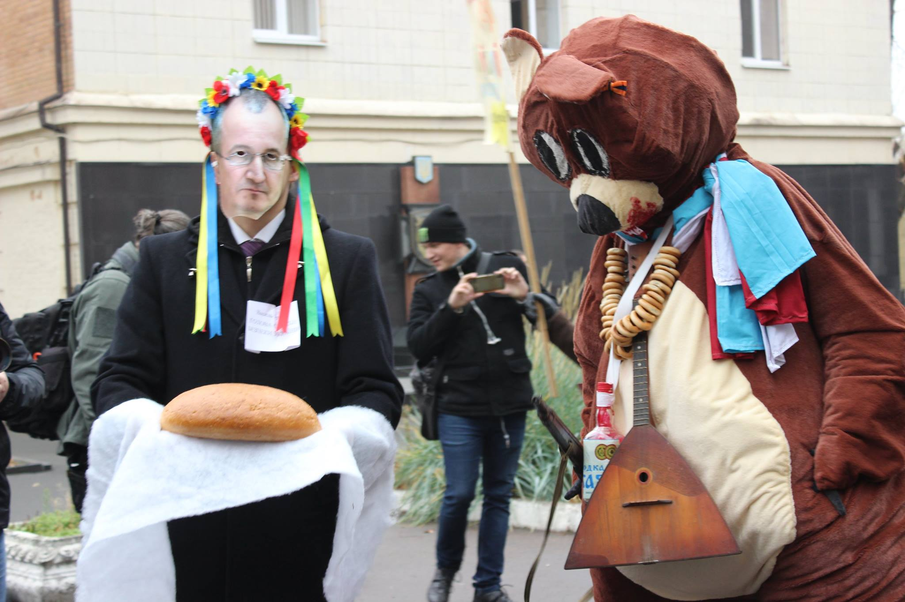

Біля будівлі Ради національної безпеки і оборони України активісти
Громадянського руху «Відсіч» влаштували театралізовану акцію з вимогою
виконати закон і внести всіх артистів-рашистів до Переліку осіб, які створюють
загрозу національній безпеці.
Це дозволило б не тільки заборонити гастролі путінських прибічників.А й заборонити показ їхніх фільмів та іншого контенту.
ФОТОЗВІТ З АКЦІЇНа акцію прийшли десятки небайдужих громадян з плакатами. Головними персонажами акції були закривавлений російський ведмідь, а також активісти в образі голови РНБОУ Турчинова, голови СБУ Грицака, міністра культури Нищука та інших високопосадовців.
Активісти обурені, що незважаючи на сотні поданих скарг і звернень, відповідальні органи не бажають виконувати закон і всіляко гальмують наповнення Переліку. Так, РНБОУ на чолі з президентом Порошенком і секретарем Турчиновим та Нацрада з питань телебачення і радіомовлення під керівництвом Артеменка взагалі не внесли до Переліку жодного рашиста. А СБУ за проводом Грицака та Мінкульт під орудою Нищука внесли лише близько сотні осіб, тимчасом як сумновідоме звернення на підтримку Путіна та російської агресії підписали понад 500 російських діячів культури. На кожного з підписантів, а також на сотні інших артистів-рашистів активісти неодноразово подавали скарги з вичерпним фактажем про їх антиукраїнські заяви та дії, незаконні відвідини ними окупованих територій та підтримку окупантів, але на переважну більшість скарг отримували відмови або відписки.
Через таку дивну бездіяльність владних органів телеканали в Україні продовжують регулярно транслювати фільми та інший контент з ворогами України й популяризувати їх, приховуючи їхню антиукраїнську позицію.
Наприклад, нещодавно на українському ТБ показували серіали з такими акторами як Олександр Баширов, котрий схвалює російську агресію, возив на окупований Донбас "гуманітарку" та обіймався там з окупантами, Федір Добронравов, який публічно підтримав окупацію Криму та п'яний зініціював групове побиття українського подружжя у Таллінні – за Крим.
Також телеканали продовжують транслювати серіали, які популяризують російські органи. Це прямо заборонено українським законодавством, але належної реакції від Нацради та Держкіно активісти не дочекалися, хоча також подавали чимало скарг на такі фільми, наприклад, на серіал "Свати", в якому наявна популяризація російських ментів та інших органів.
Нещодавно в прокат вийшов новий український фільм "Мир вашому дому! ", головну роль в якому зіграв російський актор Євген Князєв – підписант звернення на підтримку путінської політики щодо України, котрий на запитання про Крим відповідає: "Горжусь своей страной". Не так давно на ТБ також показували серіал із Князєвим у ролі Мессінга. Активісти прикро вражені й не розуміють, як Держкіно на чолі з Пилипом Іллєнком допустило видачу прокатних посвідчень цим фільмам і чому не відмовилось від створення фільму з Князєвим, коли ще в 2014 р. стало відомо про його антиукраїнську позицію.
Ще у травні цього року, у відповідь на сотні отриманих скарг, СБУ повідомила, що не бачить підстав для внесення Князєва, Добронравова, Баширова та багатьох інших публічних артистів-рашистів до Переліку осіб, що загрожують нацбезпеці. Водночас, кількох таких артистів Служба все ж таки рекомендувала Мінкульту додати до Переліку – за ті самі провини, за які відмовилася карати решту. Мова йшла, зокрема, про Михалкова, Задорнова, Алфьорову та Ярмольника. Та минуло вже п’ять місяців, а ці особи досі не потрапили до Переліку.
Найбільші концертні заклади столиці – Палац "Україна», Палац спорту, "Жовтневий палац" – та багато інших державних і недержавних закладів України охоче надають сцену для виступів рашистів. Наприклад, у червні в Києві виступав Костянтин Райкін – давній прибічник Путіна, який публічно заявив, що радіє, що Крим тепер російський. У листопаді анонсовано тур Райкіна містами України, але СБУ явно не бажає забороняти цю одіозну російську "зірку".
Також, як стверджують активісти, з вини СБУ в Україні регулярно відбуваються виступи артистів, що незаконно гастролювали на окупованих територіях. СБУ не тільки не вносить таких артистів до Переліку, а навіть зазвичай не забороняє їм в’їзд і навіть скасовує деякі раніше винесені заборони. Наприклад, через скасовані СБУ заборони гурт "Ундервуд" та репер Макс Корж тепер можуть спокійно виступати в Україні, хоча вони неодноразово виступали в окупованому Криму, порушуючи українське законодавство і сприяючи легітимації російської окупації.
Як свідчать активісти, саботаж і бездіяльність владних органів у питанні наповнення Переліку відбувається вже понад два роки – від самого початку його запровадження. "Чому РНБОУ досі не звернула уваги на цю кричущу проблему? Невже секретар РНБОУ Турчинов, також відомий як "кривавий пастор", не бачить цієї вакханалії чи не розуміє, що це питання національної безпеки? " – дивуються вони.
Активісти вимагають від РНБОУ – головного органу з нацбезпеки – навести лад у цьому питанні та внести всіх артистів-рашистів до Переліку. Вони обіцяють не припиняти й посилювати тиск на владу, допоки всі рашисти не будуть заборонені.
Контакти:
Громадянський рух "Відсіч"
https://www.facebook.com/vidsich/
+380634529709 (Катерина Чепура)